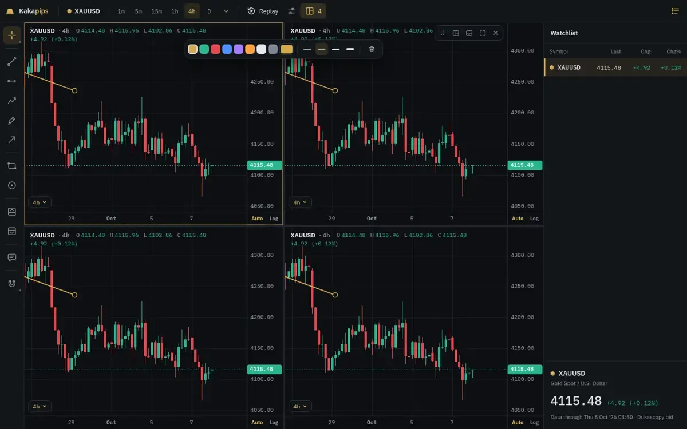
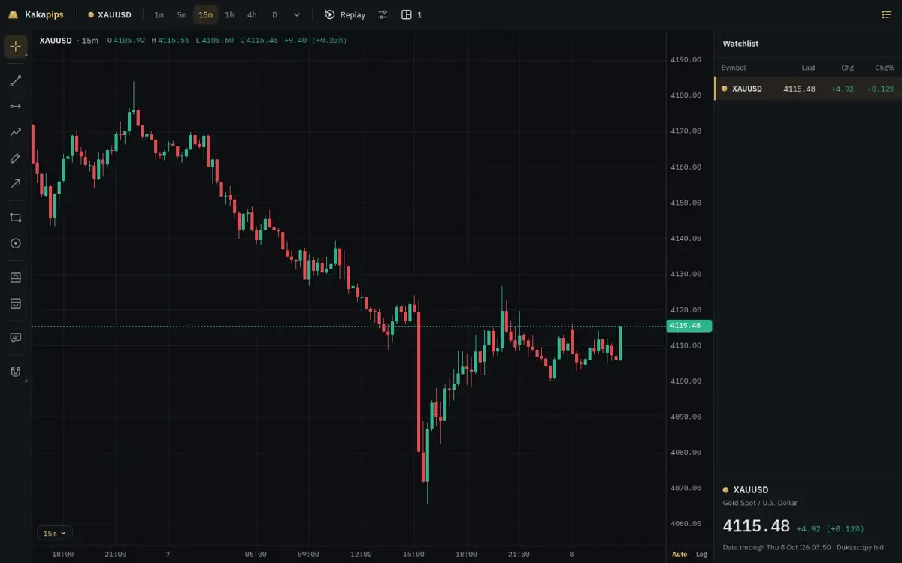
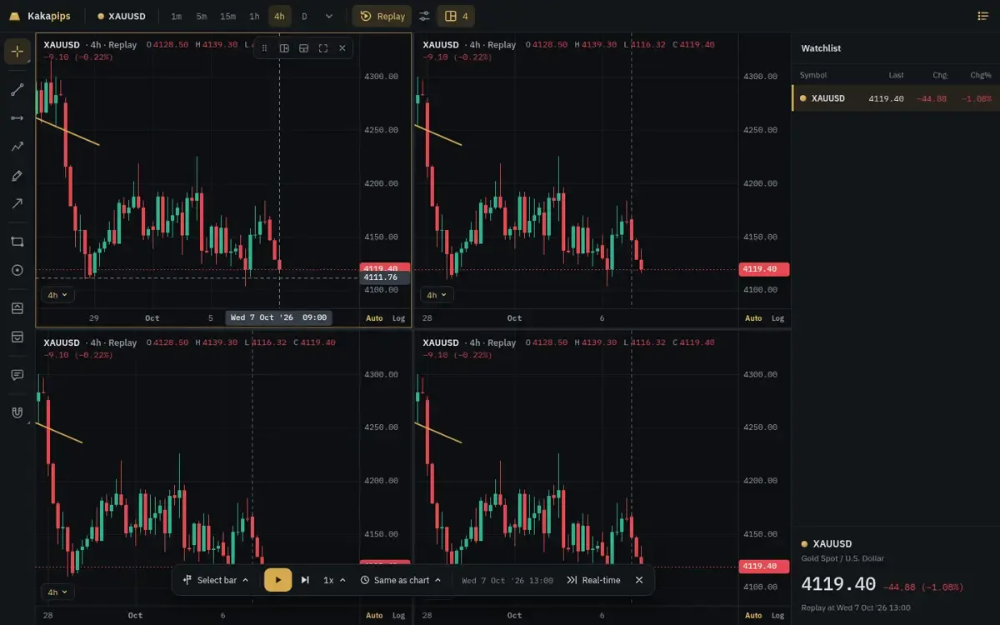
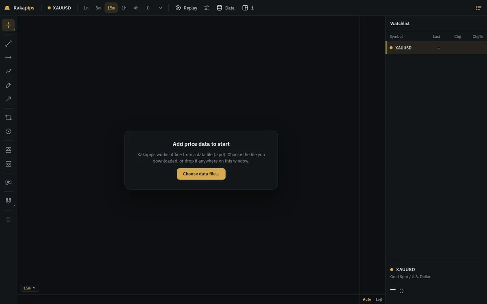
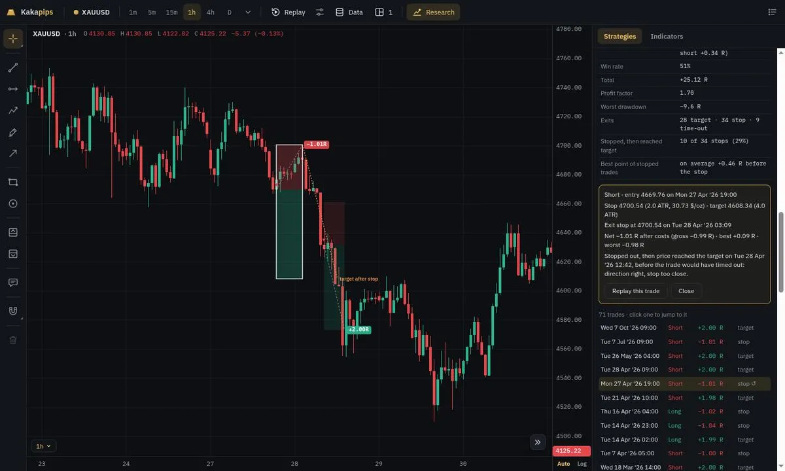
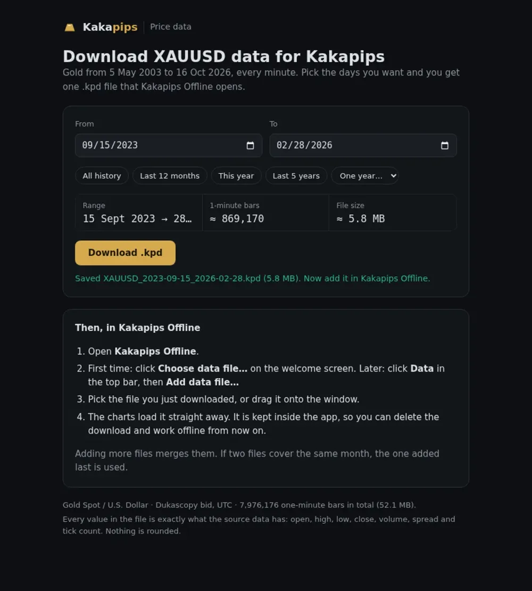

Every timeframe, side by side
Four charts, four timeframes, one screen. The crosshair and drawings stay in step without slowing the canvas down.

Own product · Trading software
A charting workstation for gold traders. In the browser, on the desktop, and fully offline.

Kakapips is a fast XAUUSD charting app. Split the screen into as many charts as you need, draw on them, then replay the market bar by bar to practise decisions without hindsight. It started as a web app and grew into a family: an offline desktop edition that carries 23 years of minute data in its own file format, and a training edition that draws research strategies straight onto the chart.
Split, dock and swap panes, or pick a preset grid. Each pane keeps its own timeframe, scroll and zoom.
Cut the chart at any moment and step forward one bar at a time, so practice happens without seeing the future.
Trend lines, levels and shapes that persist between sessions, with a quick-access toolbar.
The desktop edition keeps its data in private storage and loads it on every start. Nothing is fetched.
.kpd packs are compressed and encrypted month by month, and checked bar for bar before they are written.
The training edition shows each strategy's signals, stops, targets and every trade it took.
Four charts, four timeframes, one screen. The crosshair and drawings stay in step without slowing the canvas down.

Pick a date, hide everything after it, and play the bars forward. The quickest way to practise reading price.

On first start the desktop app asks for a .kpd file, keeps a private copy and is ready from then on.

The training edition overlays a study's signals and trades, so a backtest result can be checked by eye.

A small local page cuts any range of history into a single pack, ready to copy to another PC.

Tell me what you need. I'll tell you honestly how I'd build it, how long it would take and what it would cost.